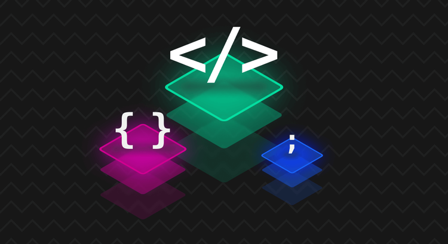

Desenvolvedor Front-End
O profissional desenvolvedor front-end é o responsável por colocar em prática, através de códigos, o design de um site ou interface. Enquanto o web design projeta o visual de um site, o desenvolvimento front-end implementa esse design através de códigos, como HTML, CSS e JavaScript.